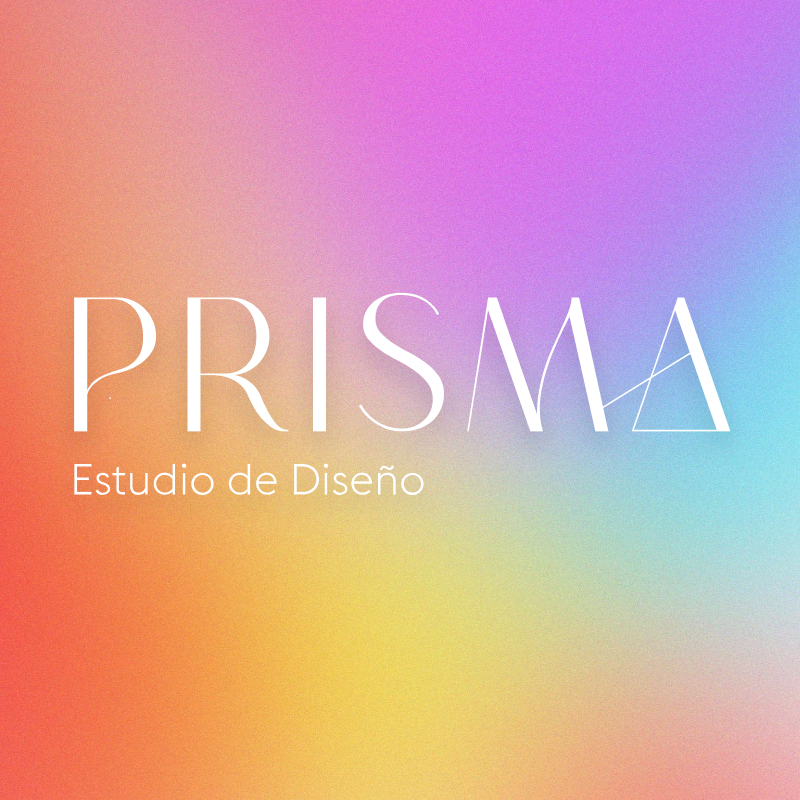

Última actualización: 16 de septiembre de 2026.
Esta página describe las prácticas de privacidad de la herramienta de programación y análisis de contenido para redes sociales desarrollada por PRISMA Estudio de Diseño, nombre comercial de Daniel Avilés Cruz (persona física con actividad empresarial). PRISMA construye y opera esta herramienta para publicar y medir el contenido de cuentas de Instagram y Facebook que sus clientes le autorizan a administrar.
La herramienta se conecta a la API de Meta (Graph API) usando permisos otorgados directamente por el administrador de cada cuenta de negocio (Página de Facebook y cuenta de Instagram profesional). Con esos permisos, la herramienta:
La herramienta no recopila, vende ni comparte con terceros datos personales de las personas que interactúan con esas cuentas (comentaristas, seguidores). Los datos leídos se usan únicamente para operar la cuenta del cliente y para elaborar reportes de desempeño para ese mismo cliente. No se usan con fines publicitarios propios de PRISMA ni se transfieren a otras empresas.
Los tokens de acceso se almacenan cifrados (Llavero de macOS o secretos de GitHub Actions) y solo los usa el propio sistema de publicación; nunca se comparten ni se registran en texto plano.
Esta herramienta es de uso interno de PRISMA Estudio de Diseño para prestar servicios de gestión de contenido a sus clientes. El acceso a una cuenta de Instagram o Facebook se otorga y se puede revocar en cualquier momento por el administrador de esa cuenta, desde la configuración de su propia cuenta de Meta Business. El uso de la API de Meta por parte de esta herramienta está sujeto además a las Condiciones de la Plataforma de Meta.
Para solicitar la eliminación de cualquier dato que esta herramienta haya guardado sobre una cuenta o sobre el contenido leído de ella, o para revocar el acceso, escribe a dan.aviles.cruz@gmail.com. Toda solicitud se atiende en un máximo de 20 días hábiles.
PRISMA Estudio de Diseño — Daniel Avilés Cruz
dan.aviles.cruz@gmail.com